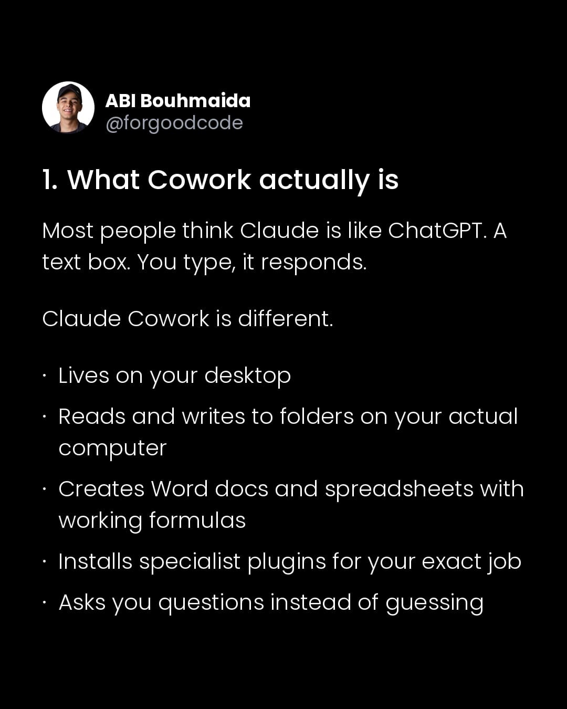
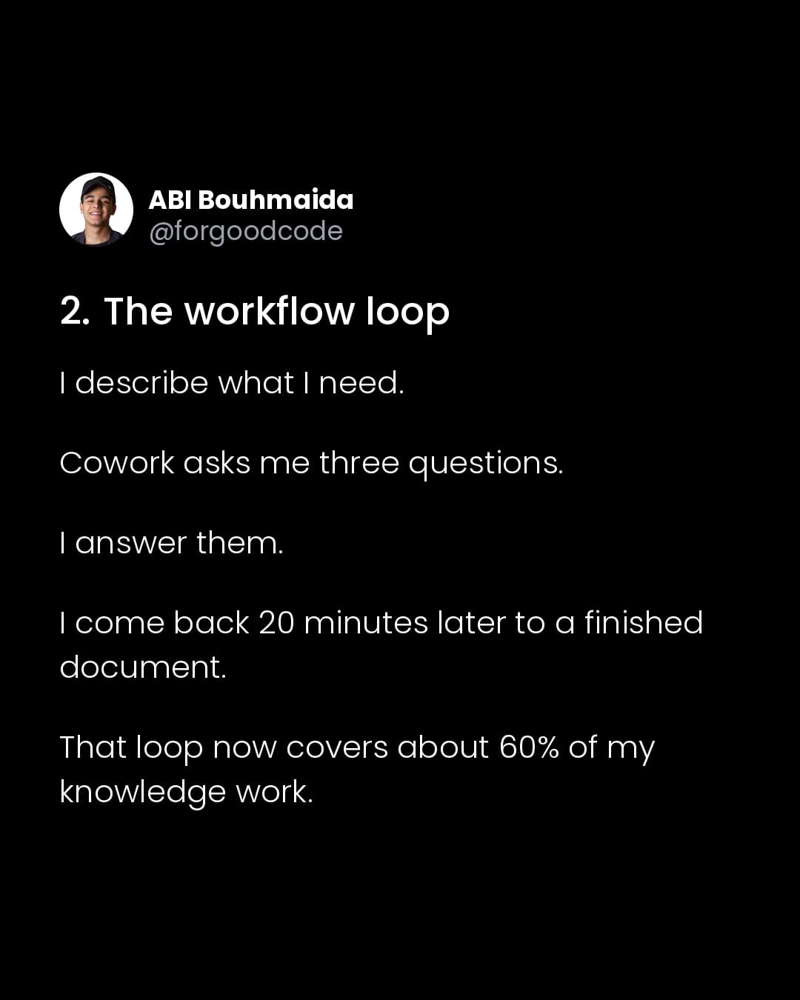
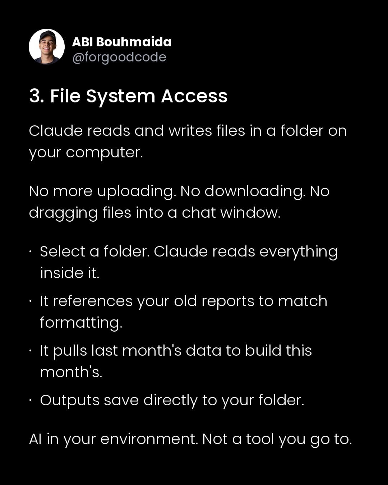
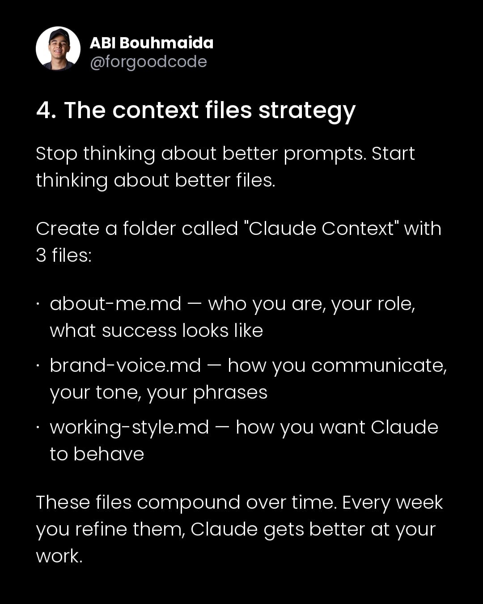
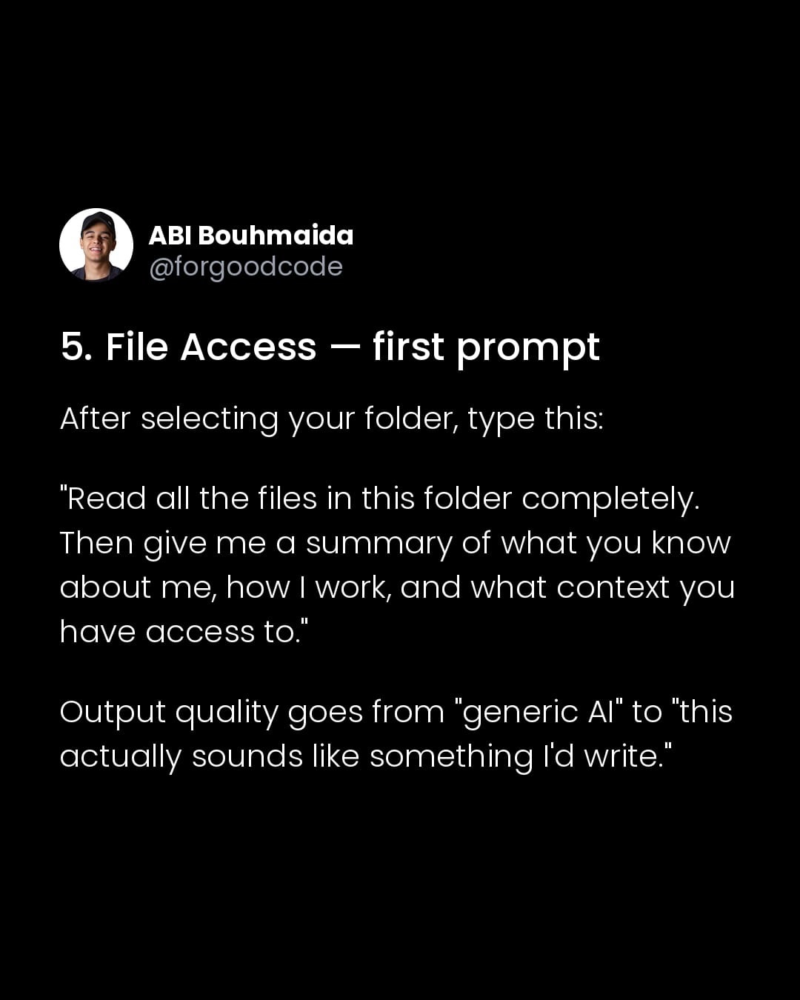
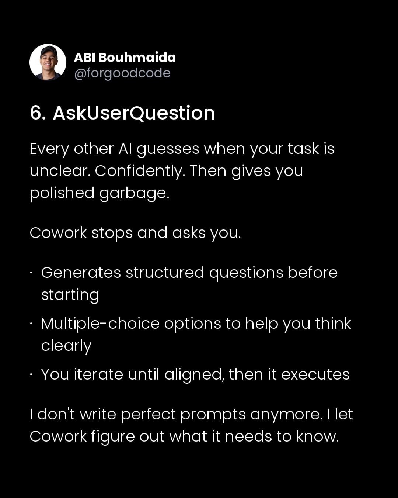
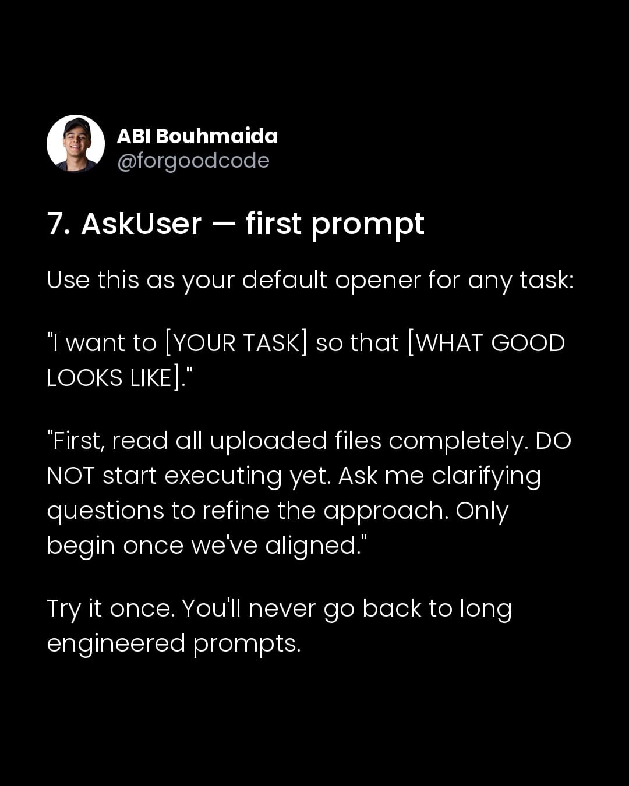
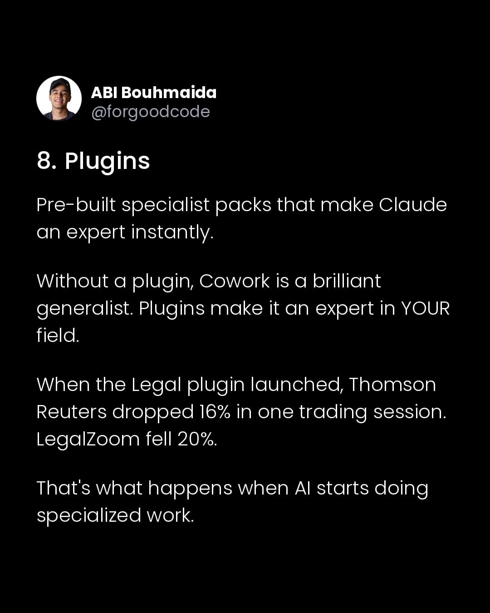

Instagram Post
ABI Bouhmaida @forgoodcode Claude Cowork isn't a...
carousel (10 slides) (enriched by ClaudeClaw)
Summary
ABI Bouhmaida @forgoodcode Claude Cowork isn't a chatbot | ABI Bouhmaida @forgoodcode Claude Cowork isn't a chatbot | ABI Bouhmaida @forgoodcode 1 | ABI Bouhmaida @forgoodcode 2 | ABI Bouhmaida @forgoodcode 3 | ABI Bouhmaida @forgoodcode 4 | ABI Bouhmaida @forgoodcode 5 | ABI Bouhmaida @forgoodcode 6 | ABI Bouhmaida @forgoodcode 7 | ABI Bouhmaida @forgoodcode 8
1
ABI Bouhmaida @forgoodcode Claude Cowork isn't a chatbot. It controls your computer and completes tasks for you. Here's how to set it up the right way. A thread;
A social media post on a black background displays a profile picture of a smiling man and text about Claude Cowork.
2
ABI Bouhmaida @forgoodcode Claude Cowork isn't a chatbot. It controls your computer and completes tasks for you. Here's how to set it up the right way. A thread;
A social media post on a black background displays a profile picture of a smiling man and white text discussing Claude Cowork.
3
ABI Bouhmaida @forgoodcode 1. What Cowork actually is Most people think Claude is like ChatGPT. A text box. You type, it responds. Claude Cowork is different. Lives on your desktop Reads and writes to folders on your actual computer Creates Word docs and spreadsheets with working formulas Installs specialist plugins for your exact job Asks you questions instead of guessing
A social media post with white text on a black background, featuring a profile picture of a smiling man and a list of features for "Claude Cowork."
4
ABI Bouhmaida @forgoodcode 2. The workflow loop I describe what I need. Cowork asks me three questions. I answer them. I come back 20 minutes later to a finished document. That loop now covers about 60% of my knowledge work.
A social media post displays white text on a black background, detailing a "workflow loop" and featuring a profile picture of a smiling person.
5
ABI Bouhmaida @forgoodcode 3. File System Access Claude reads and writes files in a folder on your computer. No more uploading. No downloading. No dragging files into a chat window. Select a folder. Claude reads everything inside it. It references your old reports to match formatting. It pulls last month's data to build this month's. Outputs save directly to your folder. AI in your environment. Not a tool you go to.
A social media post or slide features a profile picture of a smiling man and text on a black background, discussing file system access for an AI named Claude.
6
ABI Bouhmaida @forgoodcode 4. The context files strategy Stop thinking about better prompts. Start thinking about better files. Create a folder called "Claude Context" with 3 files: • about-me.md — who you are, your role, what success looks like • brand-voice.md — how you communicate, your tone, your phrases • working-style.md — how you want Claude to behave These files compound over time. Every week you refine them, Claude gets better at your work.
A social media post displays a profile picture of a man named Abi Bouhmaida and text outlining a "context files strategy" for interacting with an AI named Claude.
7
ABI Bouhmaida @forgoodcode 5. File Access — first prompt After selecting your folder, type this: "Read all the files in this folder completely. Then give me a summary of what you know about me, how I work, and what context you have access to." Output quality goes from "generic AI" to "this actually sounds like something I'd write."
A social media post displays white text on a black background, featuring a profile picture and name "ABI Bouhmaida @forgoodcode" above a prompt for AI file access.
8
ABI Bouhmaida @forgoodcode 6. AskUserQuestion Every other AI guesses when your task is unclear. Confidently. Then gives you polished garbage. Cowork stops and asks you. Generates structured questions before starting Multiple-choice options to help you think clearly You iterate until aligned, then it executes I don't write perfect prompts anymore. I let Cowork figure out what it needs to know.
The image displays white text on a black background, featuring a profile picture of a person and their name at the top, followed by a numbered heading and several paragraphs and bullet points discussing AI and user interaction.
9
ABI Bouhmaida @forgoodcode 7. AskUser — first prompt Use this as your default opener for any task: "I want to [YOUR TASK] so that [WHAT GOOD LOOKS LIKE]." "First, read all uploaded files completely. DO NOT start executing yet. Ask me clarifying questions to refine the approach. Only begin once we've aligned." Try it once. You'll never go back to long engineered prompts.
A social media post on a black background displays a profile picture of a smiling man and text providing advice on how to structure a first prompt.
10
ABI Bouhmaida @forgoodcode 8. Plugins Pre-built specialist packs that make Claude an expert instantly. Without a plugin, Cowork is a brilliant generalist. Plugins make it an expert in YOUR field. When the Legal plugin launched, Thomson Reuters dropped 16% in one trading session. LegalZoom fell 20%. That's what happens when AI starts doing specialized work.
A social media post with white text on a black background, featuring a profile picture of a man and discussing AI plugins and their market impact.
All slides







